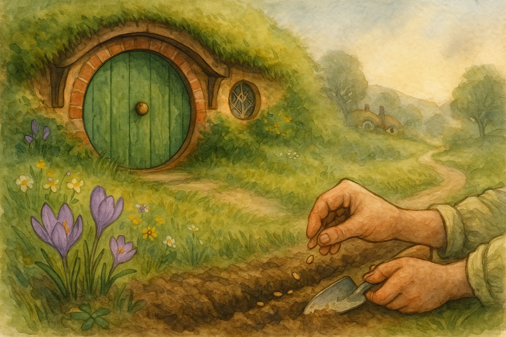

This morning the Hill had that particular look it gets when winter is still loitering about the hedges, but spring has begun to clear its throat. I took a pocketful of seeds and a very serious little trowel, and went out as if I were on a great errand (which, for a hobbit, I suppose I was).
There is something quietly brave about planting. You put a thing into the earth and you must wait — you must trust — and you must not go poking at it every quarter-hour to see if it is doing its work. In Middle Earth, where the Road can turn stern without so much as a warning, I have found that sort of patience is its own kind of courage.
When the breeze came down from the top of Bag End, it carried the smell of turned soil and distant woodsmoke, and I remembered an old truth spoken on the way: "If more of us valued food and cheer and song above hoarded gold, it would be a merrier world." A few neat rows in the garden are not treasure in any dragon’s reckoning, but they are a promise — and promises, like breakfasts, are best kept.
Filed under: Middle Earth • Written at Bag End